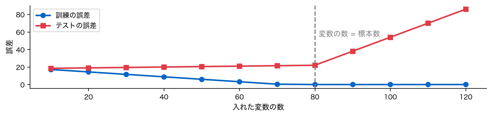
第6回 正則化
高次元データで係数を安定させ、重要変数を絞る
場面：「変数を全部入れたら壊れた」
使えそうな変数を100個そろえました。標本は80件。全部入れて回帰します。
訓練の誤差はゼロになります。 ですがテストは崩壊します。なぜでしょうか。
今回の問い
100変数の遺伝子発現データで病状スコアを予測したい。
- 普通の線形回帰（OLS）を使うと係数が不安定・過学習
- そもそも変数が標本より多いと、OLSは解が一意に定まらない
- どう安定させ、どの変数が重要かを絞れるか？
今回は、その答えとなる正則化を学ぶ。
具体化①：高次元データはどこにでもある
- 遺伝子発現：数万遺伝子 × 数百サンプル（p \gg n）
- テキスト解析：単語ごとに1変数 → 語彙数だけ次元が増える
- センサー・画像：1ピクセル1変数で数千〜数万次元
変数が多いほど情報が増えそうに見えるが、実際は過学習と不安定さを招く。
具体化②：変数が増えると何が起きるか
X, y, true_coef = make_regression(n_samples=100, n_features=100, n_informative=10,
noise=20, coef=True, random_state=42)
X_train, X_test, y_train, y_test = train_test_split(X, y, test_size=0.2, random_state=42)
scaler = StandardScaler().fit(X_train)
X_tr, X_te = scaler.transform(X_train), scaler.transform(X_test)
print(f"訓練 n={X_tr.shape[0]} 変数 p={X_tr.shape[1]} "
f"真に効く変数={(true_coef != 0).sum()}")訓練 n=80 変数 p=100 真に効く変数=10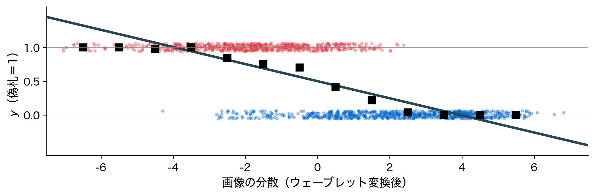
訓練標本80に対し変数100——p > n の典型的な高次元設定です。
データの四角形：横長になった
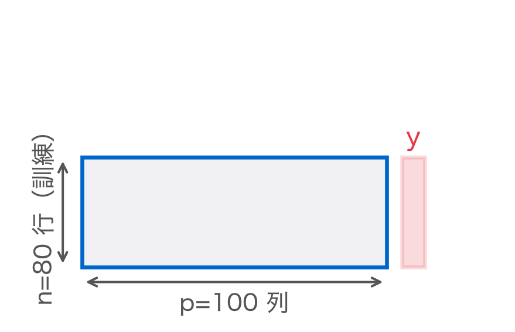
第1回からの縦長と違い、行より列が多い（p>n）横長の四角形。この形の変化が今回のすべての出発点。
具体化③：真の係数はスパース
100変数のうち、ゼロでない真の係数は10個だけ。残りは完全にゼロ。
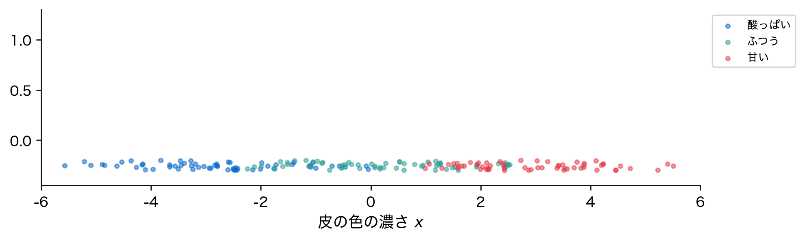
理想のモデルは「赤い10本だけを拾い、残り90本をゼロにする」もの。
素朴な方法①：OLSをそのまま当てる
OLS 訓練RMSE : 0.0
OLS テストRMSE : 75.7
係数の最大絶対値: 74.6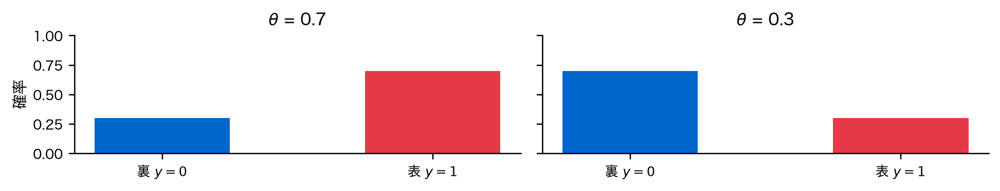
素朴な限界：訓練0・テスト崩壊
- 変数が標本より多いと、訓練データを完全に通る解が作れる
- p > n では X^\top X が特異になる
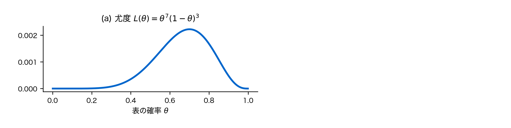
「訓練は完璧、テストは壊滅」——この差を埋めるのが正則化です。
位置づけ：第5回からの流れ
- 第5回：共線性で係数が暴れる問題を、VIFで診断した
- 第6回（今回）：その暴れを、ペナルティ項で抑え込む
- 第7回（次回）：予測対象を数値からカテゴリへ——分類モデルへ進む
第5回で「(X^\top X + \lambda I)^{-1}X^\top y が解を安定化する」と予告した。 今回はその \lambda こそが正則化の正体だと明かす。
直感：ペナルティで係数を縮める
- Ridge（L2）：すべての \beta を小さく縮める（ゼロにはしない）
- Lasso（L1）：不要な \beta をゼロに落とす（変数選択）
- ElasticNet：両者の混合
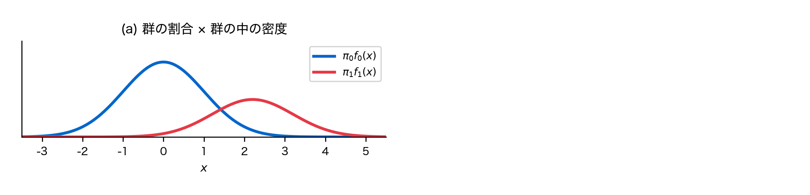
大きな係数ほど損。
行列で見る：αI を足して支える
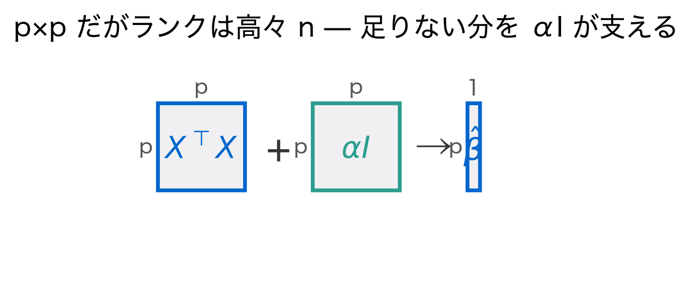
\hat{\boldsymbol{\beta}}_{\text{Ridge}} = (\mathbf{X}^\top\mathbf{X} + \alpha\mathbf{I})^{-1}\mathbf{X}^\top\mathbf{y}
対角に \alpha を足す一手で解が決まる（導出①で確認）。
定義①：Ridge回帰（L2正則化）
\min_{\boldsymbol{\beta}} \;\sum_{i=1}^n (y_i - \hat{y}_i)^2 \;+\; \alpha \sum_{j=1}^p \beta_j^2
読み方：残差の二乗和に、係数の二乗の和を \alpha 倍して足したものを最小にする。
- \alpha = 0 なら OLS と一致。\alpha が正則化の強さ
- 全係数がなだらかに縮む。変数選択はしない
定義②：Lasso回帰（L1正則化）
\min_{\boldsymbol{\beta}} \;\sum_{i=1}^n (y_i - \hat{y}_i)^2 \;+\; \alpha \sum_{j=1}^p |\beta_j|
読み方：罰を係数の絶対値の和にする。ここがゼロを生む鍵になる。
- 絶対値が、一部の係数をちょうどゼロにする力を生む
- ゼロの変数は使われない → 変数選択を兼ねる
定義③：ElasticNet（L1とL2の混合）
\min_{\boldsymbol{\beta}} \;\sum (y_i - \hat{y}_i)^2 \;+\; \alpha\!\left[\rho \sum |\beta_j| + \frac{1-\rho}{2}\sum \beta_j^2\right]
- \rho = 1 なら Lasso、\rho = 0 なら Ridge
- L1の変数選択と、L2の安定性を両取りする
定義④：なぜ標準化が前提か
- 「年収（千円単位）」と「年齢（歳）」では、同じ重要さでも係数の桁が違う
- スケールの大きい変数ほど係数が小さくなり、不当に罰を免れる
- だから正則化の前に、全変数を標準化（平均0・分散1）するのが鉄則
StandardScaler を訓練データだけで fit するのも忘れずに（リーク防止）。
定義⑤：罰と制約をノルムで書く
\lVert\boldsymbol{\beta}\rVert_2^2=\sum_j\beta_j^2, \qquad \lVert\boldsymbol{\beta}\rVert_1=\sum_j\lvert\beta_j\rvert
\begin{aligned} \text{罰の形：}&\;\min\;\lVert\mathbf{y}-\mathbf{X}\boldsymbol{\beta}\rVert^2+\alpha\lVert\boldsymbol{\beta}\rVert\\ \text{制約の形：}&\;\min\;\lVert\mathbf{y}-\mathbf{X}\boldsymbol{\beta}\rVert^2\;\;\text{s.t.}\;\;\lVert\boldsymbol{\beta}\rVert\le c \end{aligned}
- L2 は第1回の定義④の長さ、L1 は絶対値で測る長さ
- 2つの形は同じ問題。\alpha が大きいほど c は小さい
定義⑥：微分できない点と劣微分
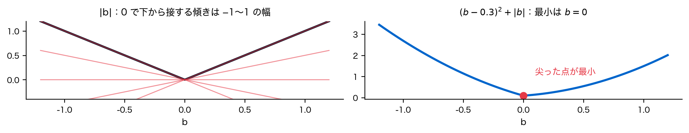
\partial\lvert b\rvert= \begin{cases}\{\operatorname{sign} b\} & (b\ne 0)\\ [-1,\,1] & (b=0)\end{cases}
最小の条件：0\in\partial f（「勾配が 0」の一般化）
導出①：Ridgeの閉じた解
勾配（第1回の定義⑤⑥）を 0 と置く：
-2\mathbf{X}^\top(\mathbf{y}-\mathbf{X}\boldsymbol{\beta})+2\alpha\boldsymbol{\beta}=\mathbf{0}
\hat{\boldsymbol{\beta}}_{\text{Ridge}} = (X^\top X + \alpha I)^{-1} X^\top y
- \alpha I が対角に正の値を足すので、X^\top X が特異でも逆行列が存在する
導出②：閉じた解を数値で確認
公式と sklearn の Ridge が一致するか確かめる。
係数の最大の差: 1.0e-13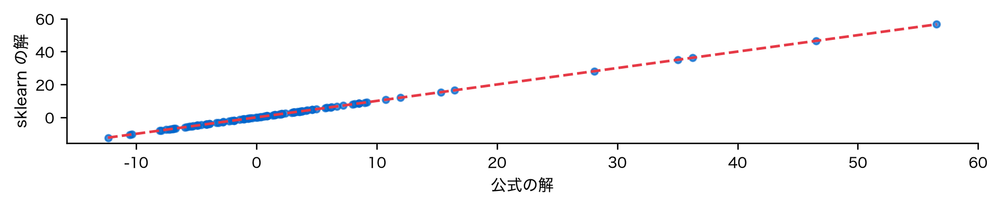
点が対角線に乗っています。公式と実装は同じものを計算しています。
導出③：なぜL1だけゼロになるか
制約付き最小化（定義⑤）として見ると、制約領域の形が運命を分ける。

赤い等高線（誤差）が最初に触れる点が解。菱形は角＝軸上で触れやすい。
導出④：角に当たるとゼロが生まれる
幾何で見た「角に当たりやすい」が、スパース解の正体。
- Ridge（円）：滑らかなので接点が軸上に来ない
- Lasso（菱形）：尖った角に接しやすく \beta_j = 0 が出る
「角があるか・滑らかか」——この一点が変数選択を決める。
アルゴリズム：αをどう選ぶか

RidgeCV / LassoCV がこの手順を1行で実行します。
デモ①：正則化パス（係数 vs α）
\alpha を動かすと係数がどう変わるかを描く（正則化パス）。

Ridgeは全線がゆっくり縮む。Lassoは線が次々とゼロに折れ込む。
デモ②：CVでαを選ぶ
print(f"OLS テストRMSE={root_mean_squared_error(y_test, lr.predict(X_te)):.1f}")
print(f"Ridge α={ridge_cv.alpha_:.3f} テストRMSE="
f"{root_mean_squared_error(y_test, ridge_cv.predict(X_te)):.1f}")
print(f"Lasso α={lasso_cv.alpha_:.3f} テストRMSE="
f"{root_mean_squared_error(y_test, lasso_cv.predict(X_te)):.1f}")OLS テストRMSE=75.7
Ridge α=2.364 テストRMSE=75.0
Lasso α=2.656 テストRMSE=22.8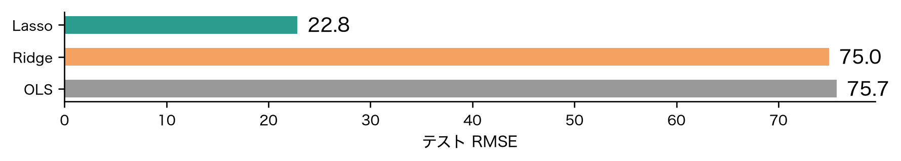
効く変数が少ないときは L1 が強い。
デモ③：Lassoの変数選択を見る
Lassoが選んだ変数と真の重要変数の重なりを見る。
選んだ変数数: 20 / 100 真の10変数: 9 / 10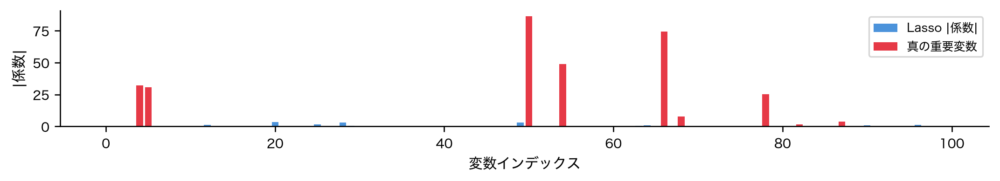
赤（真の重要変数）が高く、青はほぼゼロ。ノイズを落とせています。
デモ④：Ridge vs Lasso 係数比較
同じデータでの両者の係数を、絶対値の大きさで比べる。
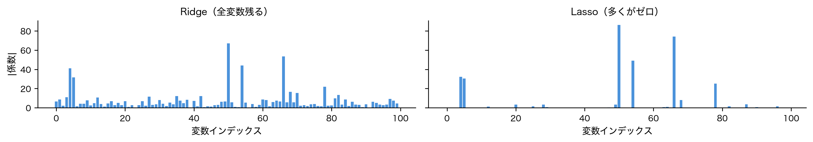
Ridge: ゼロでない係数 100/100 最大|係数|=67.1
Lasso: ゼロの係数 80/100 最大|係数|=86.3Ridgeは100本すべて残し小さく縮める。Lassoは80本をゼロに落とす。
デモ⑤：Ridgeが効く別の場面
OLS テストRMSE=107.2
Ridge テストRMSE=82.3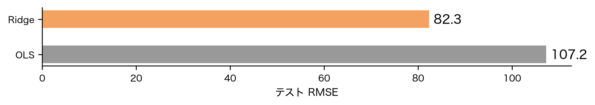
今度は Ridge が勝ちます。全変数が効くときは L2 が正解。
解釈①：いつRidge・いつLasso
| 状況 | 向いている手法 | 理由 |
|---|---|---|
| 効く変数はごく一部 | Lasso | 不要変数をゼロにできる |
| 多くの変数が薄く効く | Ridge | 全部残して縮めるのが最適 |
| 相関した変数群がある | ElasticNet | 群ごとまとめて残せる |
最初のデモはスパース構造だったのでLassoが圧勝した。
解釈②：標準化を忘れるとどうなるか
年齢と年収で、標準化の有無を比べる。
rng = np.random.RandomState(0); nn = 300
age = rng.uniform(20, 60, nn) # 数十のスケール
income = rng.uniform(200, 1500, nn) # 数百〜千のスケール
za = (age - age.mean()) / age.std(); zi = (income - income.mean()) / income.std()
target = 3 * za + 3 * zi + rng.normal(0, 1, nn) # 寄与は本来どちらも同じ
Xsc = np.column_stack([age, income])
no = Lasso(alpha=0.5, max_iter=10000).fit(Xsc, target)
ys = Lasso(alpha=0.5, max_iter=10000).fit(StandardScaler().fit_transform(Xsc), target)
print('なし:', np.round(no.coef_, 4), ' あり:', np.round(ys.coef_, 3))なし: [0.2446 0.0078] あり: [2.368 2.477]標準化なしだと年収の係数が不当に小さい。標準化後は対等になる。
解釈③：αと予測誤差・スパース性
\alpha を上げるほど係数は縮み、変数は減るが、上げ過ぎると当てはまらない。
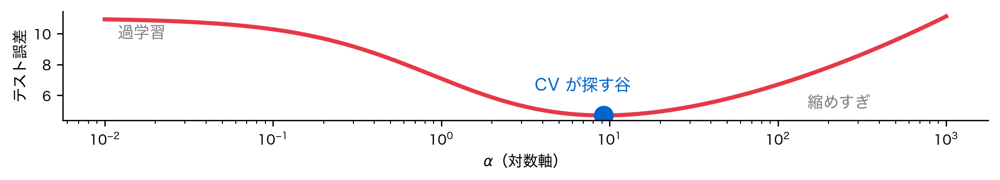
最適な \alpha とは、バイアスとバリアンスの釣り合う点です。
予測は立て直せ、効く変数も絞れた——ただ、これらの解釈には落とし穴があるかもしれない。
落とし穴①：標準化は必須
正則化を使うなら、標準化はオプションではなく前提。
- スケールの大きい変数が不当に罰を免れ、選択・縮小が歪む（解釈②で実証）
PipelineにStandardScaler→ 回帰器を入れ、CVの内側でfitする- テストデータの統計量で
fitしない（第3回のデータリークと同じ罠）
sklearn の RidgeCV/LassoCV は標準化をしてくれない——自分で入れる。
落とし穴②：αの選び方の罠
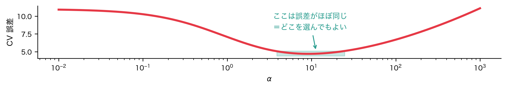
最小点だけでなく、誤差曲線が平らな領域かも確認すると安全です。
落とし穴③：Lassoは相関変数で不安定
相関の強い2変数があると、Lassoは一方しか選ばない。
rng = np.random.RandomState(3); m = 200
base = rng.normal(0, 1, m)
xa, xb = (base + rng.normal(0, 0.05, m) for _ in range(2)) # 相関 ≈ 0.997
xc = rng.normal(0, 1, m)
yc = 3 * base + 2 * xc + rng.normal(0, 1, m)
Xc = StandardScaler().fit_transform(np.column_stack([xa, xb, xc]))
las = Lasso(alpha=0.1, max_iter=10000).fit(Xc, yc)
print('Lasso 係数 (xa, xb, xc) =', np.round(las.coef_, 3))Lasso 係数 (xa, xb, xc) = [0. 2.927 1.871]同じ情報なのに、Lassoは片方だけ残して片方をゼロにする。
落とし穴③続き：選択が標本でブレる
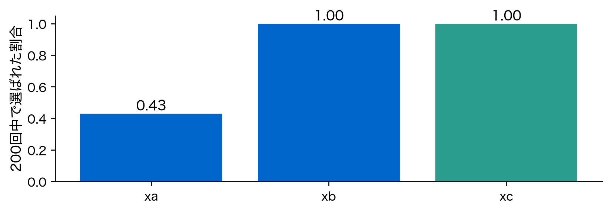
xaが選ばれる割合は約0.43、xbは1.00——相関群ではどちらを選ぶかが不安定。
落とし穴④：選んだ変数は本物か
- デモ③で選ばれた20本のうち、11本は誤って拾った雑音
- 雑音の |係数| は最大 3.3、本物9本の最小は 1.4——大きさでは見分けられない
- 解釈①の表は予測のための使い分けであって、発見の保証ではない
「効く変数の一覧」として報告する前に、選択の安定性を確かめる（発展①・②）。
発展①：ElasticNetが相関群を救う
相関した変数群を「まとめて残したい」ときはElasticNetが効く。
Lasso 選択数=19 うち真の12変数=9
ElasticNet 選択数=22 うち真の12変数=12
Lasso は相関した群から1本だけ選んで捨てます。ElasticNet は群ごと残せます。
発展②：正則化と特徴選択の関係
- フィルタ法：相関などで事前に変数を選ぶ（モデルと独立）
- ラッパー法：変数を足し引きしてCVで評価（計算が重い）
- 埋め込み法（Lasso）：学習の最適化に選択が組み込まれている
Lassoは埋め込み法の代表。ただし「選ばれた＝因果」ではない点は要注意。
できること・できないこと
| 手法 | できること | できないこと |
|---|---|---|
| Ridge | 係数を安定化・予測改善 | 変数選択（全変数残る） |
| Lasso | 変数選択・解釈しやすい | 相関変数の扱いが不安定 |
| ElasticNet | 両方のバランス・群選択 | α と l1_ratio の2軸探索 |
「変数を絞るならLasso、安定予測ならRidge、相関群があればElasticNet」。
まとめ（3点）
- 正則化は係数にペナルティを加え、過学習と不安定さを抑える
- Ridgeは全βを縮小、Lassoはβをゼロにして変数選択まで行う
- αはCVで選び、標準化を必ず前処理に入れる
p > n で壊れたOLSを、正則化で安定したモデルへ立て直せた。
次回：数値予測から分類へ——カテゴリを予測する分類モデルを学ぶ
回帰で培った「損失にペナルティ」の発想は、分類でもそのまま生きる。